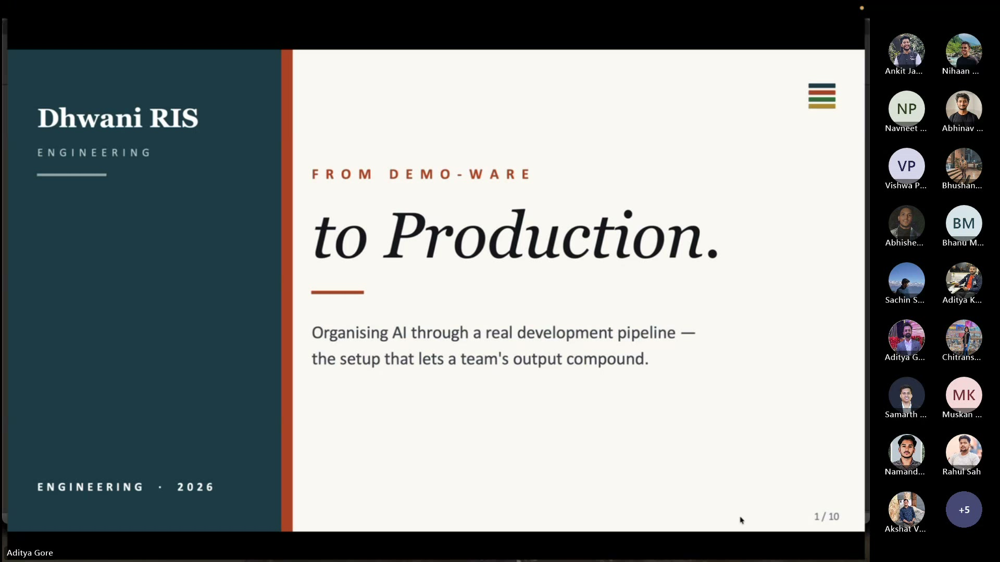
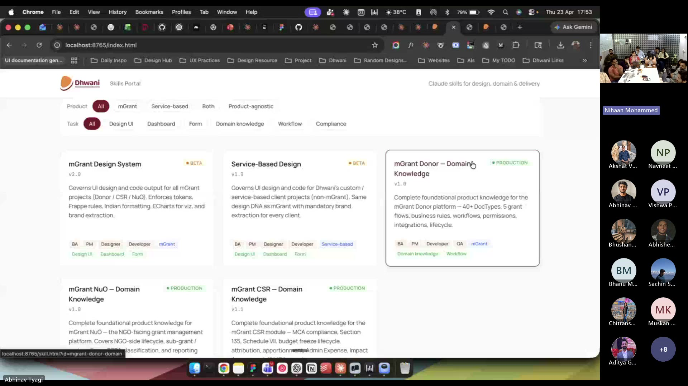
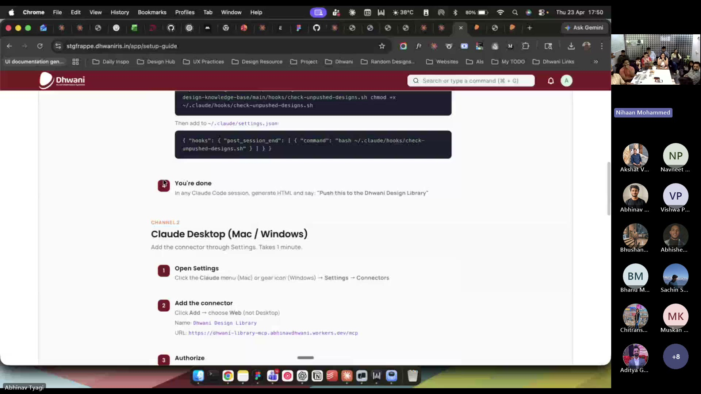

Of Chaos and Craft.
Watch the Session
Dhwani RIS members only
What Actually Happened
Six sessions in. Nihaan opened with a line the room had been waiting for: “This is one of the last of the monologue sessions.” The first five were about getting each of us good at AI on our own. That work is done. From here the sessions convert into workshops — come with a problem, build it in the room.
But first, one more dense hour. Aditya Gore on how to stop treating AI like a magic trick and start treating it like infrastructure. Abhinav Tyagi on the skill marketplace and design library that stops each of us from shipping our own idea of “what looks right.” Harshdeep with a preview of Safe-to-Ship. Closing on the one question that turns ten people’s work into one team’s output: did someone already solve this?
You’ll walk away with
- A real development pipeline for AI-assisted code — rules file, local hooks, CI blockers, human gates
- How to roll that pipeline out without tanking a legacy codebase — warn first, block later, never weaken a rule
- Dhwani’s internal Skills Portal — where design, domain and delivery skills live, filterable by role and product
- The Design Library MCP — every HTML mock pushed to a shared library, filterable and downloadable as HTML or MD
- The one psychology shift: before you build, ask who already built it. Then use theirs, or contribute a PR
- Where the program goes next — Thursday 5–6 PM stays, but the room is now yours to bring problems into
The Thesis — Individual Craft → Collective Craft
Five sessions made each of us good at AI on our own. But good-on-your-own does not add up to a good team. Ten people building ten different ways is chaos — not output. One person building it well and nine using it is craft.
The fix is not more prompting practice. It is shared standards — plugins, skills, conventions, guardrails. Not documents to read. Infrastructure the team runs on. Treat your AI instructions the way you treat your code. Version them. Review them. Share them.
The Stack of Shared Craft
Four layers a team needs. We had taught each one already. Thursday was about connecting them.
Shared CLAUDE.md · agents.md
One set of rules everyone follows. The brain of the project. Loaded by every AI tool, automatically.
Shared Skills
Repeatable workflows saved as SKILL.md. Claude loads the right one when it needs to. The team’s memory in markdown.
Shared Plugins
A plugin bundles skills, MCP, slash commands, and sub-agents into one install. One person builds it — the whole team uses it. Harshdeep’s team is shaping Dhwani’s first org-wide plugin now.
Shared Guardrails
Hooks, review gates, AI-SDLC. What catches bad output before it leaves your machine. Safe-to-Ship lives here.
From Demo-ware to Production Aditya Gore
Aditya opened with a frame the room felt immediately. 2023 was gimmicky. 2024 was gimmicky-with-benefits. 2025 flipped. In 2026 the bottleneck moved — producing code is easy, producing code that is secure, standard, and holds up under load is the work. The fix is not a better prompt. It is a pipeline.

The drawbacks of raw prompting
Three drag forces every team without a pipeline will feel —
- Rework tax. You publish. It breaks. You redo. It breaks differently. Senior dev review fatigue sets in.
- Drift toward average. Without set standards, a year in your code looks like every other average codebase in the world. AI trained on the average will produce the average, forever.
- Senior review burnout. Seniors spend their review cycles on naming, layering, library choices — things a rule file should catch in eight seconds.
The four-layer setup
Most violations die at layer 1 or 2 — which is the goal. Fail fast, fail cheap.
The rollout — warn first, block later
Rules are the easy part. The rollout is the product. Six stages —
Baseline the legacy. Grandfather old code. Burn down the baseline over a quarter. Never weaken a rule — when a red build fires, fix the code, not the rule.
Four things to take home
The rules file is the lever. Versioned, pointed to by every tool, thin enough to fit every context window.
Linters, scans, and owners don’t get tired, don’t get busy on sprint end. They catch what humans miss.
Legacy baseline beats a loosened rule every time. Protect the ratchet so the bar never slips back.
Infrastructure gets owners, SLOs, rollouts and rollbacks. Tooling gets abandoned on a Friday.
The follow-up. Aditya’s deck and checklist are being converted into a shared skill — landing in the Skills Portal so every project can pull the same pipeline without re-reading the slides.
Design as Psychology, Science, Structure Abhinav Tyagi
Everyone in the room has become a creative person this year — because Claude made UI production trivial. Abhinav’s point was the hard one that follows: trivial production doesn’t mean good design. He showed two tools he has built to keep the standard up as the volume scales.
1 · The Skills Portal
A filterable marketplace of design, domain, and delivery skills. Filter by product (mGrant, service-based, both, product-agnostic) or by task (Design UI, Dashboard, Form, Domain knowledge, Workflow, Compliance). Each skill has a version, status, preview, and a one-click install path into your Claude Code session.

Skills live at launch
• Service-Based Design v1.0 Beta — same DNA as mGrant with brand extraction on every client
• mGrant Donor Domain Knowledge v1.0 Production — 40+ DocTypes, 5 grant flows, permissions, integrations
• mGrant NuO Domain Knowledge v1.0 Production — NGO-side features, sub-grant, FCRA, results framework
• mGrant CSR Domain Knowledge v1.1 Production — MCA Section 135, Schedule VII, freeze lifecycle, 11 MCA reports
2 · The Design Library MCP
The Skills Portal governs how new UI is built. The Design Library MCP preserves what has been built. Every HTML mock you produce can be pushed to a shared library, with Claude fetching project ID, client, and metadata for you. Later, anyone on the team filters the library by project or creator, previews full-screen, and downloads as HTML or MD to re-build something similar.

“Push this to the Dhwani Design Library.”Create a preview before you push. Get it reviewed. Then ship. The design-system skill + the library are there so “looks good in my head” becomes “tested against a standard.”
Safe-to-Ship — The Preview Harshdeep
Harshdeep took a minute to trail what ships next. Now that we’re all writing code with AI more than ever, Safe-to-Ship is the guarantee that what leaves a laptop is what we committed to. It is how Security.md, the guardrail skills, and the hooks from S4 all come to life at the CI layer. A full walkthrough lands in next week’s session.
Four courses worth doing
Anthropic Academy — the foundations under everything we do here.
Four short courses on Anthropic Academy that anyone building with Claude will benefit from: Agent Skills, the Claude API, Model Context Protocol, and Claude Code in Action. Free, roughly seven hours total, self-paced.
Dhwani folks — there’s a short internal check-in form once you’re done, so we can keep track of who’s done what.
The first question to carry in
Plugins and skills are shared craft. Someone on the team, someone in the community may already have done the work. Your first move is not to build — it is to look.
Ten people each building the same thing three different ways → chaos. One person building it well, nine using it → craft.
If nothing exists, build one and share it. If something exists and doesn’t hit the mark, contribute a PR. The one behaviour this program wants you to unlearn is forking a skill in silence.
The pivot — what “Playground” means from here
The playground becomes a playground.
Six sessions were enough to get everyone to basecamp. From here, the Thursday hour is not a lecture. It is an open build room. Bring a problem, bring a use case, or just bring curiosity.
Nihaan will be there. Ankit will be there. Most weeks, Abhinav, Aditya or Harshdeep will be in the room too — problem-solvers and problem-creators, together. One hour, one problem, solved or started.
Next Thursday, Nihaan and Ankit are working on the ticketing paradigm + agent elements. Come contribute to that, or come pull someone into your own problem. The invitation is open either way.
Key takeaways
The bottleneck moved. It is no longer producing code. It is producing code that is secure and holds up under load. The answer is a pipeline, not a better prompt.
Four layers, not one. Rules file, local hooks, CI blockers, human gates. Each one is designed to catch what the last one missed. Most violations die at layer 1 or 2. That is the goal.
Rules are easy. Rollout is the product. Warn before you block. Baseline the legacy. Never weaken a rule — when a red build fires, fix the code, not the rule.
Design is a skill, not a taste. Psychology, science, structure — not “what looks good.” The Skills Portal + Design Library MCP replace “ship it if it feels right” with “ship it if the standard says so.”
Before you build, ask. The AI group channels exist so you don’t build something that already exists. Use them. Contribute PRs over forks. This is the psychological shift.
Sessions change shape from here. Every Thursday 5–6 PM stays. The lecture goes. Bring a problem; leave with someone working on it with you.
Where this sits in the arc
S0–S5 taught the stack. S6 connects the stack. S7 and onward, the room uses the stack together — on real problems, live. The lecture arc closes. The workshop arc opens.
Further Reading
Ongoing memo series from Thoughtworks on building with AI in production. The “rework tax” Aditya described shows up repeatedly — and so does the pipeline fix.
The 150M lines-of-code study behind the 41% revert-rate stat. Churn and duplication metrics on AI-assisted code. Worth reading if you want to cite numbers in an internal pitch.
The substrate under Abhinav’s Design Library MCP. Read the servers section to understand why it was a one-afternoon build rather than a one-quarter project.
The hook system Aditya anchored layer 2 on. Pre-commit, pre-push, post-session — the same primitives Safe-to-Ship will lean on. If you skipped S4, this is the catch-up.